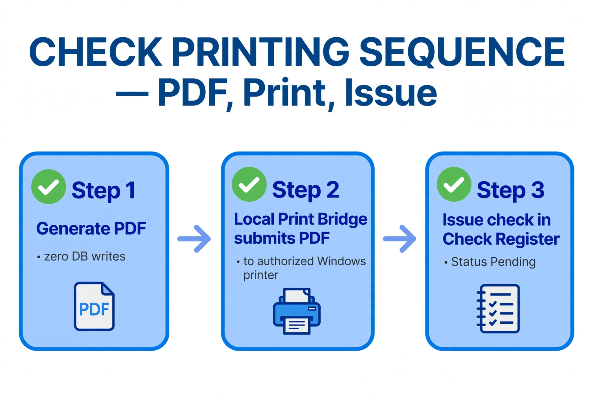
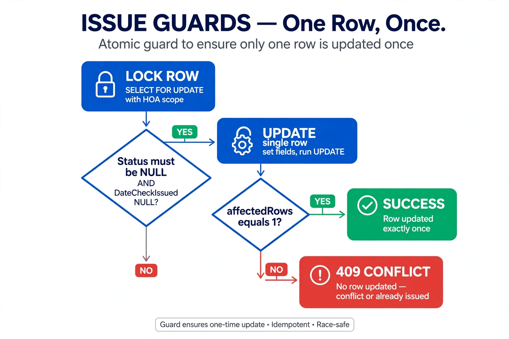
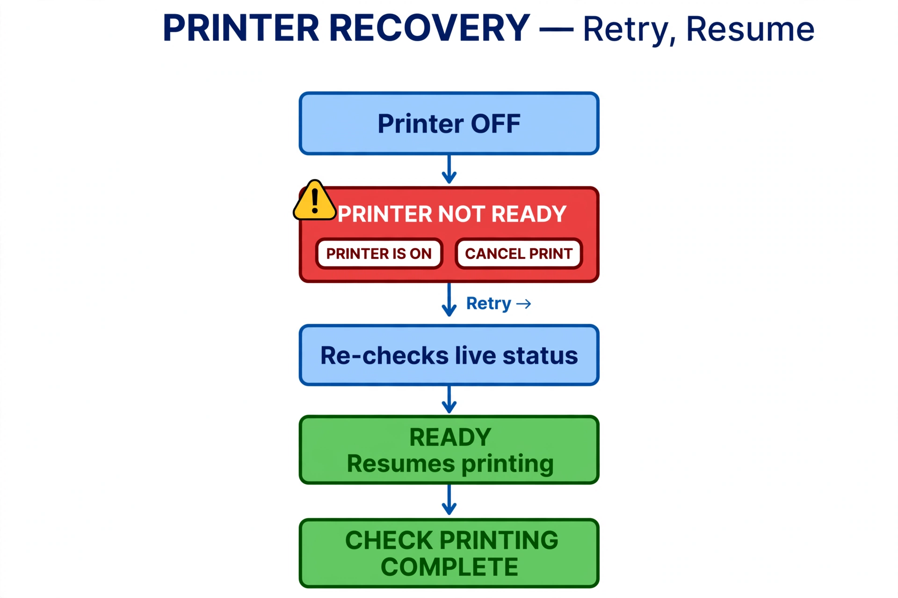
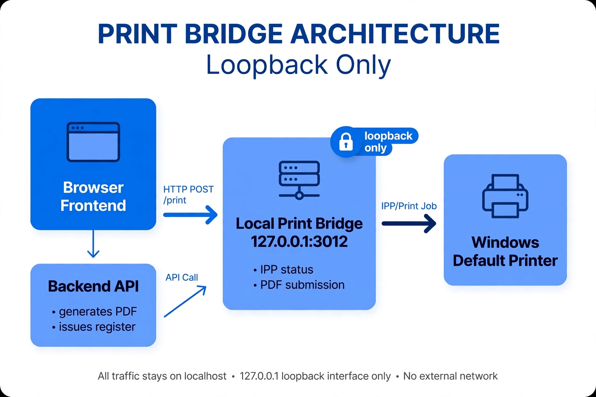

Branch: feature/windows-print-status-checkpoint · Tip: 783775c (2026-09-22, Rick) Reviewer: Jose (code-only review, no live test — physical printing runs on Windows) Date: 2026-09-23
Rick's test statement: fresh IPP readiness check → PDF with zero DB writes → physical submission through the Local Print Bridge → issuance only after successful submission → printer OFF blocks issuance → PRINTER NOT READY popup with retry/cancel → OFF→ON recovery → single + three-check sequential printing → checks 1026, 1027, 1028 verified Pending.
| Commit | Title | Scope |
|---|---|---|
ec2591b | WIP: Check Creator, PDFKit, MICR, and Check Register work | +2498/−44 — PDF engine, Check Creator UI, test-hack removal, Banking modes |
f2be392 | Windows IPP printer-status milestone | +350 — print bridge, printer discovery, PrintEngine |
783775c | Complete end-to-end Check Creator physical printing | +511/−107 — pdf/issue split, /print-pdf, popups |
| # | Claimed behavior | Code evidence | Result |
|---|---|---|---|
| 1 | PDF generation performs zero DB writes | New POST /api/print-checks/pdf uses pool db directly, no getConnection/beginTransaction; loadCheckPrintData = SELECT + joins; getHoaTimeZone = SELECT SystemSettings + in-memory tz | ✅ Confirmed structurally |
| 2 | Issuance only after successful bridge submission | Frontend loop per check: pdf → submitPdfForPrint → POST /api/print-checks/issue; any throw skips issue | ✅ Confirmed |
| 3 | Printer OFF prevents issuance | confirmPrinterReadyForPrint gate before loop; non-READY opens popup instead of throwing | ✅ Confirmed |
| 4 | PRINTER NOT READY popup with retry/cancel | showPrinterUnavailable overlay: PRINTER IS ON re-checks + resumes, CANCEL PRINT closes | ✅ Confirmed |
| 5 | Each printed check independently Pending | issue is per-transaction (FOR UPDATE + single-row UPDATE + commit per check) | ✅ Confirmed |
| 6 | Completion confirmation + return to register | CHECK PRINTING COMPLETE popup with per-count message; OK calls onClose | ✅ Confirmed |
| 7 | Race-safe issuance | SELECT … FOR UPDATE with MgtCo+HOA scope; UPDATE requires DateCheckIssued IS NULL AND Status IS NULL; affectedRows===1 else 409; button disabled via isCreatingChecks | ✅ Confirmed |
| 8 | Test scaffolding removed | ec2591b deletes the TEMPORARY ALEX TESTING hack — new checks enter NULL/NULL (precondition for the guards) | ✅ Confirmed |
| 9 | Bridge loopback-only | print-service.js listens on 127.0.0.1:3012 (before and after); PRINT_BRIDGE_URL is loopback; CORS * contained to the machine | ✅ Confirmed |




O1 — Partial-batch resume reprints. If issue fails on check 2 of 3, retry calls createSelectedChecks() from check 1: the pdf endpoint has no Status guard, the bridge reprints physically, and only issue returns 409. Suggest a resume index (continue from the failed check) or a Status pre-check before bridge submission.
O2 — No reprint path after a paper jam. Any existing Status now returns 409 and the UPDATE requires NULL/NULL (previously Pending could re-issue). Correct as "issue once", but post-issue jam recovery has no defined operator procedure.
O3 — Bridge has no own package.json. require('pdf-to-printer') resolves via backend/node_modules (works only if backend deps are installed). Suggest an explicit backend/print-service/package.json or a startup check.
O4 — Dead weight. Three empty placeholder components (PrintChecksActions/Details/Lists.jsx, 0 bytes) and binary blobs with no source in repo (IppStatusHelper.exe, 3 MICR .ttf, 3 .dotx templates) — accepted as-is, noted for provenance (native helper source requested).
O5 — Pre-existing. Frontend localhost:3011 URLs now in two endpoints; pdf-preview route untouched while the UI no longer opens PDFs (physical-only by design).
POST /api/print-checks/issue carries hardcoded scope with TODO(scope-merge) markers (HOA-FL-2024-001 / MGTCO-001 / SYSTEM) — consistent with keeping feature/auth-roles separate until the integration design (security levels, active-HOA switching, session rules, frontend/cache clearing) is jointly agreed. The future merge will conflict exactly on these hunks; that is the right time to wire req.hoa.
Approve with minor observations. Architecture is sound, race guards are correct, and the test-hack removal restores the production invariant the issuance flow depends on.
1. Operator procedure for O1 (printed-but-not-issued) and O2 (post-issue jam)? 2. Confirm checks 1026–1028 started from NULL/NULL state? 3. IppStatusHelper.exe source or acceptance of the blob? 4. Do you want this branch merged to BravoFrontend, and with what strategy for the two local-only docs commits (e0f7b3e, 3ab74bf)?